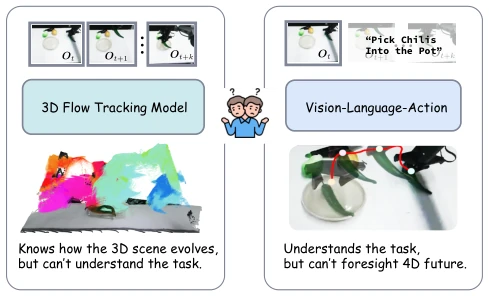
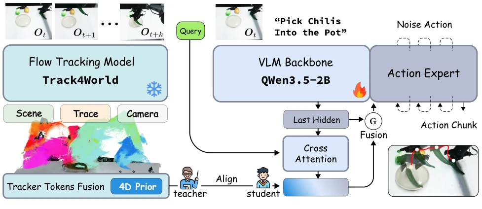
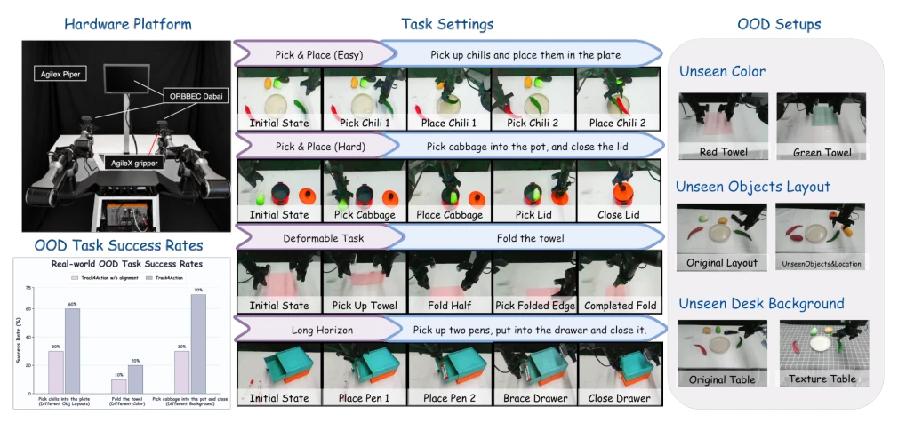
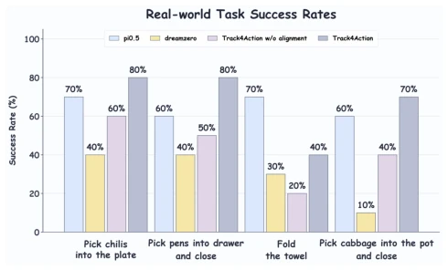
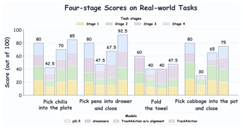

这篇论文搞了个“特供版”蒸馏，用冻结的 Track4World 当老师，教 VLA 学生怎么理解 3D 世界变化，但部署时老师直接退场。这招挺聪明，既利用了真实演示里的物理证据，又没增加部署负担，避免了传统 World Model 推理慢的问题。不过，训练时依赖特定视角的时序视频，离线预处理成本不低，而且如果老师 Track4World 自己看错了（比如遮挡或快速运动），学生也得跟着背锅，继承了 teacher 的误差。物理实验虽然涨了 25 个点，但只测了 4 个任务，且主要依赖长程任务，对于变形物体操作仍有挑战。总的来说，这是用离线算力换在线性能的一次成功尝试，但“特权监督”的泛化性仍需更多验证，毕竟老师也是会犯错的。
This paper proposes a 'privileged' distillation approach, using a frozen Track4World as a teacher to instruct the VLA student on understanding 3D world changes, while the teacher is removed at deployment. This strategy is quite clever, leveraging physical evidence from real demonstrations without increasing deployment burdens, avoiding the slow inference issues of traditional World Models. However, training relies on temporal videos from specific viewpoints, incurring non-trivial offline preprocessing costs. Moreover, if the teacher Track4World misinterprets (e.g., occlusion or fast motion), the student inherits these errors. Although physical experiments improved by 25 points, only 4 tasks were tested, primarily relying on long-horizon tasks, with challenges remaining for deformable object manipulation. Overall, this is a successful attempt to trade offline compute for online performance, but the generalization of 'privileged supervision' requires more validation, as the teacher is also prone to errors.
VLA models typically learn only action labels, unaware of how world geometry and visibility change after action execution. For example, π0 [4] and OpenVLA [17] primarily optimize action likelihood, ignoring scene dynamics. Existing methods like [32] SpatialVLA or [35] LaMP introduce geometric priors but mostly predict the future or static alignment, not utilizing *already occurred* transitions in demonstrations. This paper aims to solve: Can 3D tracker features aligned with actions serve as privileged supervision, discarded after training? This fills the semantic gap between action commands and physical world changes, enabling the policy to better understand 'consequences,' especially maintaining state consistency in long-horizon tasks.

Figure 1: Track4Action: Unifying 4D Scene Dynam- ics with Task Understanding. Flow-tracking models cap- ture how a scene evolves in 4D but lack task awareness, whereas conventional VLA policies understand what to ac- complish but do not explicitly model future 4D dynamics. Track4Action bridges these complementary strengths, learn- ing task-conditioned actions with awareness of scene flow.
Overall, it is a distillation framework. During training, a frozen Track4World processes demo clips $V_{t:t+K}$, pooling scene, motion, camera tokens as target features $f^{trk}_t$. The student-side VLA backbone encodes current observations, extracting features via learnable track queries $Q$, aligning with target features ($L_{align}$). The key innovation is that queries not only align but also fuse back into the VLA sequence via feature-wise gates, conditioning the flow-matching action head ($L_{act}$). This design makes queries an action-oriented bottleneck, rather than an isolated auxiliary head, ensuring supervision signals directly shape action representations. At deployment, only the VLA path is retained, completely tracker-free, requiring no teacher inference. The loss function includes action loss and alignment loss, jointly optimizing the policy.

Figure 2: World-centric 3D tracker feature distillation in Track4Action. During training, frozen Track4World encodes the action-aligned clip Vt:t+K into a pooled target built from scene, motion, and camera tokens. Track queries extracted from current VLA hidden states match this target and are fused back into the VLA sequence through a feature-wise gate to condition the flow-matching action head. The K actions correspond to the K transitions between the K + 1 teacher frames. Only the current-observation policy path is retained at deployment.
Tested on LIBERO, RoboTwin 2.0, and physical platforms. LIBERO-Plus zero-shot reached 82.3%, 7.6 points higher than the no-alignment baseline. RoboTwin two-finger task reached 80%+. Physical experiments 4 tasks average success rate 67.5%, 25 points higher than no-alignment. Ablation proves alignment path effective, robustness improved significantly under OOD settings (new colors, layouts). Especially on long-horizon tasks (Long) and physical deformation tasks, supervision signals help policy maintain state consistency. Physical experiments also demonstrated generalization capability under unseen backgrounds, object layouts, proving distillation feature effectiveness.

Figure 3: Illustration of Real-world evaluation. Upper left: the AgileX ALOHA-style hardware platform, built with two Piper arms and equipped with three cameras: one front-facing camera and one wrist-mounted camera on each arm. Center: four real-world manipulation tasks covering rigid-object transfer, deformable-object manipulation, and long-horizon interaction. Right: the OOD settings, including unseen towel color, object layout, and desk background. Lower left: OOD experimental results comparing alignment-free variant (w/o alignment) with Track4Action under the three settings.

Figure 4: Real-world task success rates. Success rate mea- sures full task completion over 10 trials per task. Across the four tasks, Track4Action averages 67.5% success. The “w/o alignment” legend denotes the variant trained without tracker supervision.

Figure 5: Four-stage process scores on the real-world tasks. Each stacked bar decomposes the process score into four ordered, equally weighted milestones; its total height is the resulting score out of 100. Across the four tasks, Track4Action averages 75.0.